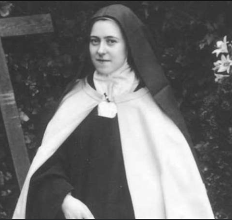

São Pio X e a Canonização de Santa Teresinha
"A maior Santa dos tempos modernos!"
Santa Teresinha do Menino Jesus foi canonizada em 17 de Maio de 1925 pelo
Papa Pio XI, apenas 27 anos após sua morte. Sua Santa preferida, Santa Joana d'Arc,
foi canonizada dia 16 de Maio de 1920 pelo Papa Bento XV, uma semelhança surpreendente!
E São Pio X exclamou antes mesmo de Santa Teresinha ser beatificada: "é a maior Santa dos
tempos modernos!"



- Estruturei o arquivo/elemento html;
- Verifiquei se o mesmo estava correto e não faltando nada;
- Para cada elemento adicionado uma verificação era realizada;
- Adicionei no elemento head um elemento título e um meta;
- Adicionei no elemento body um elemento h1, h2 e p;
- Adicionei no mesmo elemento três elementos img com alt;
- Por fim adicionei um elemento ol